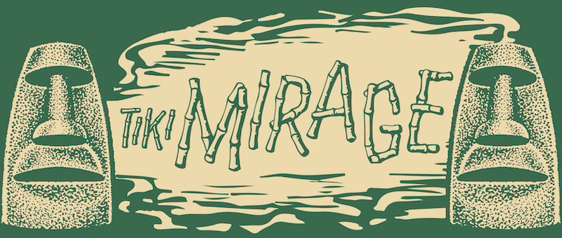

Deep under the sea once lived a place where shipwrecked pirates, Polynesian princes, mermaids and all who had heard its legendary tales sought serene escape from the harsh waters, good company and exotic cocktails. A spate of untamed tides sent this sacred place farther into the depths than any sane soul could reach. Lost for countless years, a brave sea explorer once stumbled upon this gem and brought it ashore. Dazzled by its seemingly magical ability to melt away even the slightest of stresses of its inhabitants, the explorer knew he must treat his discovery with great care. On the mainland, he kept it hidden in plain sight and shared it with only a few comrades. Although still cloaked under the guise of the ordinary and everyday, few have been lucky enough to be granted access. Today, you have been chosen to join us in Luau at Tiki Mirage.
September 6th and 7th
at an undisclosed location in Los Angeles, CA
By invitation only